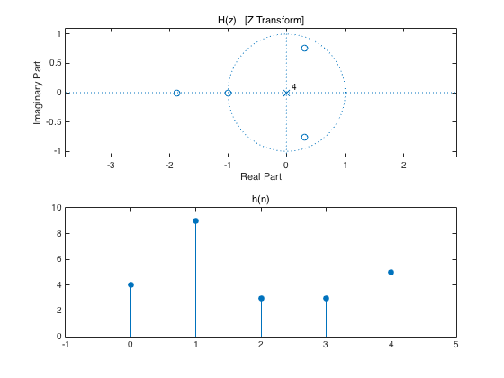
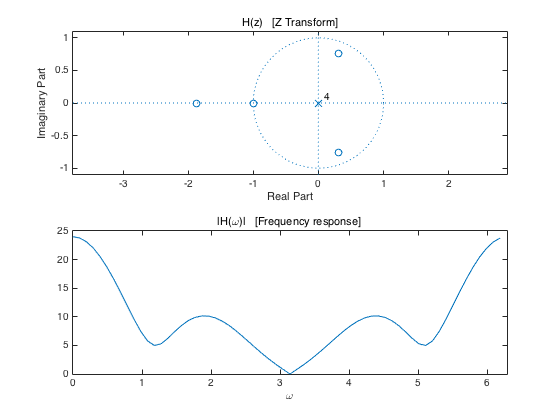
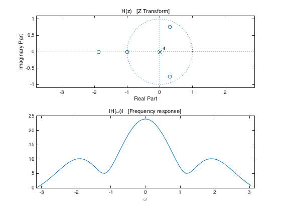
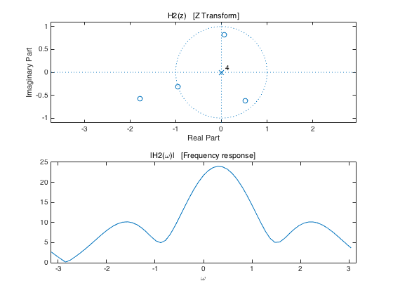

demo_2: Modulation property of Z-transform and DTFT
Example using FIR filter
Contents
Define FIR filter
h = [4 9 3 3 5]; N = length(h); n = 0:N-1; figure(1) clf % Plot pole-zero diagram subplot(2, 1, 1) zplane(h) title('H(z) [Z Transform]') % Plot impulse response subplot(2, 1, 2) stem(n, h, 'filled') title('h(n)') xlim([-1 N])
Plot frequency response
Nfft = 64; H = fft(h, Nfft); f = (0:Nfft-1)/Nfft; om = 2*pi*f; figure(1) clf subplot(2, 1, 1) zplane(h) title('H(z) [Z Transform]') subplot(2, 1, 2) plot(om, abs(H)) title('|H(\omega)| [Frequency response]') xlabel('\omega') xlim([0 2*pi])
Plot frequency response over [-pi, pi]
instead of over [0, 2 pi]
figure(1) clf subplot(2, 1, 1) zplane(h) title('H(z) [Z Transform]') subplot(2, 1, 2) plot(om - pi, fftshift(abs(H))) title('|H(\omega)| [Frequency response]') xlabel('\omega') xlim([-pi pi])
Modulation
Complex modulation
I = sqrt(-1); h2 = h .* exp( I * 0.1 * pi * n ); % h2 is complex ! % How does this change the pole-zero diagram and frequency response H2 = fft(h2, Nfft); figure(2) clf subplot(2, 1, 1) zplane(h2) title('H2(z) [Z Transform]') subplot(2, 1, 2) plot(om - pi, fftshift(abs(H2))) title('|H2(\omega)| [Frequency response]') xlabel('\omega') xlim([-pi pi]) print -dpdf demo_2
Question
The pole-zero diagram rotates and the frequency response shifts (why?)
% Does this also work for a recursive filter? % See next example...